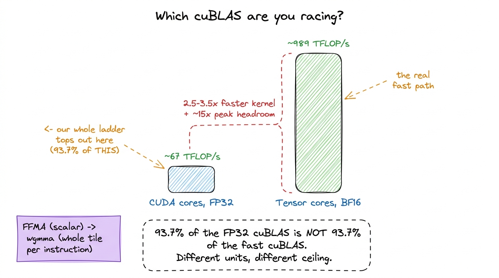
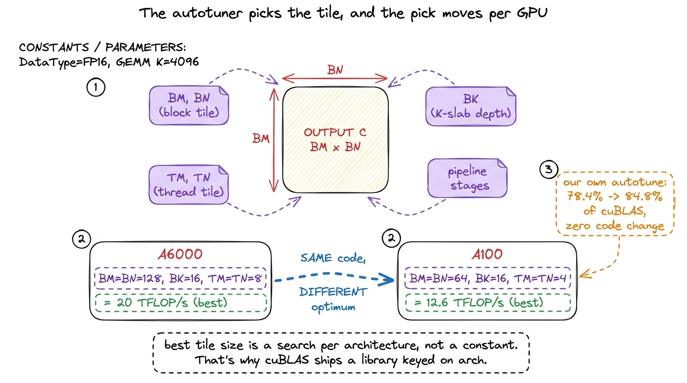
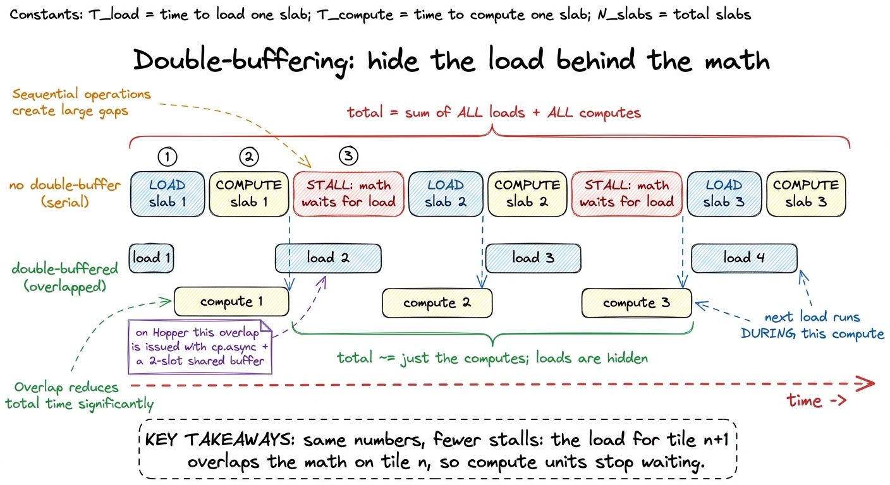
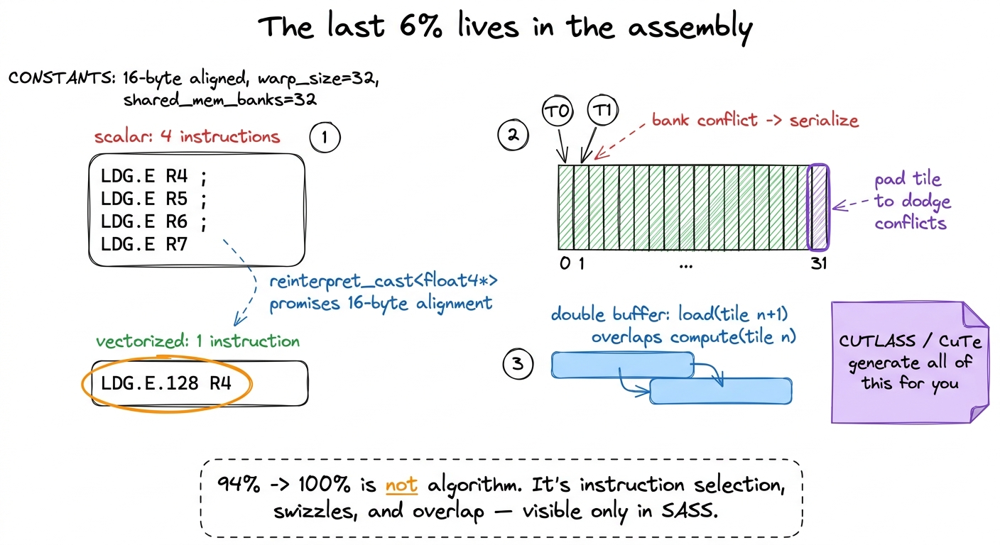

What cuBLAS is actually doing
Every number on this site is a fraction of one denominator: cuBLAS. When kernel 1 hits 1.3% of cuBLAS and the warptile kernel claws its way to 93.7%, the thing sitting in the divider is a closed-source library that ships inside every CUDA install and that NVIDIA has been tuning for the better part of fifteen years. We are going to spend a whole ladder of articles chasing this number. So before we take another step, I want to stop and ask a question I personally avoided for embarrassingly long: what is cuBLAS actually doing in there?
Because here is the uncomfortable truth. You cannot honestly measure yourself against a black box you refuse to open. If all you know is "cuBLAS is fast," then when you hit 90% you have no idea whether the last 10% is one afternoon of work or a career. And you certainly can't tell whether you're winning the right fight — or whether the whole ladder is quietly racing a version of cuBLAS that has one hand tied behind its back.
That last point turns out to be the whole story. So let me state the question this article answers, plainly:
When we say a kernel is "93.7% of cuBLAS," which cuBLAS is that, what is it doing that our single hand-written kernel does not, and why does the last handful of percent cost more engineering than the entire first 94%?
We will open the box. Not to reverse-engineer it — you can't, it's proprietary — but to name the five distinct things it is doing, one at a time, from the ground up. By the end you'll be able to look at any cuBLAS benchmark and know exactly which of its five tricks is on the table and which is hidden.
First, what even is a GEMM, and what is a "kernel"?
Let me not assume anything. GEMM stands for GEneral Matrix Multiply: compute C = A · B, where A, B, and C are matrices. To keep the arithmetic clean, picture all three as square, N × N, and every entry a 32-bit float (FP32, 4 bytes). Every output cell C[m][n] is a dot product — slide across row m of A, down column n of B, multiply the pairs, add them up. That's the whole operation, and if you want it built from scratch, kernel 1 does exactly that.
A kernel is the small program that runs on the GPU to compute this. You write it once; the GPU launches thousands of copies of it, one per thread, and the threads are grouped into blocks, and the blocks are scattered across the chip's Streaming Multiprocessors (SMs) — an H100 has 132 of them.1 132 is the H100 SXM5 count. The PCIe H100 has 114 SMs, and the original A100 has 108. These per-chip counts matter more than you'd think — a heuristic that fills 108 SMs perfectly can leave 24 of an H100's SMs idle. "Fill the machine" is always relative to which machine. The entire art of kernel engineering is: keep all 132 SMs busy, feed them data fast enough, and waste as few clock cycles as possible.
Our worklog produces exactly one kernel. It has one set of tile-size constants — BM, BN, BK, TM, TN — chosen once and baked in at compile time. cuBLAS, we are about to discover, is not one kernel. It is not even ten. That single fact reframes everything, so let's start there.
Mental model: cuBLAS is a switchboard, not a kernel
Here is the picture I want you to carry through the whole article. Don't think of cuBLAS as a function. Think of it as a switchboard sitting in front of a wall of drawers, where each drawer holds one pre-built, pre-tuned kernel for one specific shape of problem.
When you call cublasSgemm(M, N, K, ...), you are not calling a matrix multiply. You are handing the switchboard your problem's dimensions, and the switchboard picks which drawer to open.
 figure rendering · cuBLAS is a shape-indexed switchboard over hundreds of specialized ker
figure rendering · cuBLAS is a shape-indexed switchboard over hundreds of specialized kerHow many drawers? Let's not hand-wave. If you profile cuBLAS on a sweep of square sizes from 128 up to 4096, you can watch the switchboard hand the work to a rotating cast of differently-named kernels. Simon Boehm did exactly this and counted 16 distinct kernels across that one sweep. Here's a slice of what he saw:
| Matrix size | Kernel the switchboard picked |
|---|---|
128 | ampere_sgemm_32x32_sliced1x4_nn |
256 | ampere_sgemm_64x32_sliced1x4_nn + splitKreduce_kernel |
512 | ampere_sgemm_32x32_sliced1x4_nn |
1024–4096 | ampere_sgemm_128x64_nn |
Sixteen kernels for one shape family (squares). Now imagine every non-square shape that real workloads throw at it. The full compiled cuBLAS library is on the order of 500 MB, and the overwhelming majority of that bulk is exactly this: thousands of pre-tuned kernel variants, one for every shape regime the authors thought worth specializing.2 Contrast that with our kernel: a few kilobytes of PTX. The ~500 MB size difference is the performance gap made physical. Every drawer is a bet that some real workload will land in that shape, and NVIDIA has placed thousands of bets.
Our worklog builds one drawer — the 128×64-ish large-square one — and it's a good drawer. But it's one drawer facing a wall of them.
Why one drawer isn't enough: the tyranny of shape
You might reasonably push back here. "If my kernel is well-tuned for big squares, why do I need the other drawers at all? Real matmuls are big, aren't they?"
They are not. And this is the first place the mental model earns its keep. Let's think about what actually runs in production on an H100 right now:
- The
Q · Kᵀproduct in attention is oftenM × Nlarge butK(the head dimension) small — 64 or 128. - An MLP down-projection can be tall and skinny.
- A batched decode step in inference has
M = 1. One token at a time. That's not a matrix multiply so much as a matrix-vector product wearing a matrix's coat.
For each of these, the "right" kernel lives at a completely different point in the tile-shape space. Let me make that concrete instead of abstract. Suppose K is tiny — say K = 64. Our kernel stages a BK-deep slab of A and B into shared memory each iteration of its inner loop. If BK = 16, that's fine when K = 4096 (256 iterations of real work). But when K = 64, there are only 4 iterations — the shared-memory staging machinery, the double-buffering, the whole pipeline, is mostly overhead for a loop that barely runs. A kernel with a bigger BK and no double-buffering would win.
Or suppose M = 1 (decode). Our kernel assigns a 128 × 128 output tile to a block and expects 128 × 128 useful outputs from it. With M = 1, that block computes one row and 127/128 of its threads produce nothing. You've launched a full block to do 0.8% of a block's work.
This is what I call the tyranny of shape: a kernel's tile constants encode an assumption about the problem's proportions, and when the real problem violates that assumption, the kernel doesn't get a little slower — it falls off a cliff. The switchboard exists precisely to keep you off that cliff, by owning a different drawer for every proportion.
 figure rendering · The same tile that's perfect for a big square wastes most of its threa
figure rendering · The same tile that's perfect for a big square wastes most of its threaTrick #1: the shape heuristic — picking the right drawer
So the switchboard needs a brain: the part that reads your problem and chooses the drawer. This is the shape heuristic, and it's the piece people forget exists because when your problem is a big square it seems to do nothing.
What does it read? Four things: M, N, K (the dimensions), the dtype (FP32? BF16? FP8?), and the SM architecture (Ampere? Hopper? Blackwell?). It feeds those into a table — part measured offline, part modeled — and out comes a decision: which block-tile size, how many split-K slices (we'll get to that in a second), and whether to route through the tensor cores at all.
Think about the scale of what that heuristic is protecting. On an H100 it has to reason about 132 SMs spread across 8 GPCs (Graphics Processing Clusters, the chip's top-level partitions). Leave even a handful of those SMs idle and you've thrown away peak throughput before the first multiply instruction fires. The heuristic's entire job is: given this shape, which drawer keeps the most SMs busy? For a 4096³ square, almost any reasonable drawer fills the machine. For a 256 × 256 × 16384 problem, the wrong drawer leaves 120 of 132 SMs dark — and that brings us to the trick that surprised me most.
Trick #2: split-K — the move for skinny problems
This one broke my mental model the first time I understood it, so let me build up to why it's surprising before I show the trick.
Our entire ladder rests on one design decision, so foundational we never question it: one output tile of C is owned by one thread block, and that block sweeps the full K dimension in its inner loop, accumulating the dot products as it goes. Block owns a tile, block does all the K-work for that tile, block writes the finished tile. Clean.
That design is perfect when there are lots of output tiles. A 4096 × 4096 output split into 128 × 128 tiles gives 32 × 32 = 1024 tiles — plenty to keep all 132 SMs busy several times over.
Now shrink the output but keep K huge. Take 256 × 256 × 16384. The output C is only 256 × 256. Split into 128 × 128 tiles, that's 2 × 2 = 4 tiles. Four. Four blocks. Four SMs busy, and the other 128 SMs sitting completely dark — while there is a mountain of arithmetic to do, because K = 16384 means each of those four blocks has to grind through 16,384 multiply-adds per output element, alone.
Stop and feel how strange that is. You are compute-starved — the GPU is 96% idle — not because there's no work, but because the axis you chose to parallelize along (the output tiles) is too short. The work is all hiding in the one dimension you decided not to split: K.
Split-K is the fix, and now it's obvious. Instead of one block sweeping all of K alone, slice K into chunks and give each chunk to a different block. Slice K = 16384 into 8 chunks of 2048. Now each of the 4 output tiles is computed by 8 blocks working in parallel on different slices of K — 4 × 8 = 32 blocks instead of 4. Eight times more SMs busy.
There's a catch, and it's the tell. Each block now computes only a partial sum — its slice of the dot product. Someone has to add those partials together. So split-K needs a second pass: a small reduction kernel that sums the 8 partials for each output element into the final C.
 figure rendering · Split-K parallelizes the K (contraction) dimension so all 132 SMs stay
figure rendering · Split-K parallelizes the K (contraction) dimension so all 132 SMs stayNow go back to that profiling table from earlier and look at the 256 row: ampere_sgemm_64x32_sliced1x4_nn plus splitKreduce_kernel. Two kernels launched back-to-back from a single cublasSgemm call.3 That extra launch is the fingerprint of split-K. Whenever you see one BLAS call show up as two kernels in a profiler — a matmul followed by a splitKreduce-style pass — you've caught the switchboard deciding your K was too long relative to M and N. It's the most legible optimization decision cuBLAS makes. The switchboard looked at 256 × 256, saw only 4 tiles, and reached for the split-K drawer.
Here's the punchline that matters for the whole site: our single kernel physically cannot do this. Split-K isn't a tuning constant you can dial — there's no BK value that turns it on. It's a structural capability: a second kernel, a reduction pass, a notion of slicing K across blocks. No amount of autotuning our block-per-tile kernel will ever recover the skinny-K case, because the machinery simply isn't in the code. This is the first honest limit of our ladder, and it's a good one to have named.
Trick #3: the tensor-core path we've been ignoring
Now the biggest asterisk of all, and honesty demands we say it in plain letters:
The entire 1.3% → 93.7% climb happens on the CUDA cores, with the tensor cores switched off.
Let me unpack what those two things are, because the distinction is the whole point. Every SM has two kinds of arithmetic units. The CUDA cores are the general-purpose scalar ALUs — they do one FFMA (fused multiply-add) per thread per issue, one a*b+c at a time. The tensor cores are specialized matrix engines: a single instruction multiplies an entire small tile in one shot, cooperatively across many threads.
Our whole ladder races cuBLAS's FP32, non-tensor-core configuration. That is a completely fair fight — same units, same precision — and it's a wonderful teacher, because every optimization is legible. But it is not the fast path, and you should never confuse it for one.
How big is the gap? When you let cuBLAS use the tensor cores — by feeding it TF32 or BF16 instead of FP32 — it doesn't get a few percent faster. It gets 2.5× to 3.5× faster. Because it stops issuing scalar FFMA instructions and starts issuing matrix-multiply-accumulate instructions that chew through a whole tile per issue.4 On Ampere that instruction is HMMA.16816. On Hopper it's the warpgroup-wide wgmma (the sm_90a path), which multiplies a 64 × N × 16 tile with a single instruction issued cooperatively by 128 threads. Blackwell moves this again to tcgen05 with a dedicated Tensor Memory (TMEM). Each is a topic of its own — start at tensor cores.
Let's put real numbers on it so it isn't abstract. An H100 does roughly:
- ~67 TFLOP/s of FP32 on the CUDA cores — the ceiling our ladder is climbing toward.
- ~989 TFLOP/s of BF16 through the tensor cores — nearly 15× more math per second.

figure rendering · The FP32 cuBLAS our ladder races tops out near 67 TFLOP/s. The tensor-So the real cuBLAS you race in production is not the one at the top of our ladder. It's a tensor-core kernel doing an order of magnitude more math per clock. Reaching that is a separate climb, and it starts in the tensor cores article. Everything we do in FP32 is the scaffolding that makes the tensor-core version comprehensible rather than magic — you have to understand tiling, coalescing, and shared memory on the easy units before the hard units make any sense.
Trick #4: the autotuned tile library — don't trust a human
Even within a single shape regime — say, big squares, CUDA cores, FP32 — there's a decision left: what tile constants? BM, BN, BK, TM, TN, the warp-tile shape, the number of pipeline stages. There are hundreds of sensible combinations. Which is fastest?
Your instinct, and mine, is to reason about it: bigger tiles reuse more data, so pick the biggest tile that fits in shared memory and registers. That instinct is directionally right and precisely wrong about the exact numbers, and I can prove it, because we ran the experiment ourselves. Take our best hand-picked vectorized kernel at 78.4% of cuBLAS. Now autotune it — sweep those same constants automatically, benchmark each, keep the winner. Nothing changes but the numbers. Result: 84.8% of cuBLAS.5 That's a 6.4-percentage-point jump — worth more than several of the individual algorithmic kernels on the ladder — from zero code changes. The lesson lands hard: past a certain point, tile selection is a search problem, not a reasoning problem.
cuBLAS learned this lesson long ago. It ships a library of pre-compiled kernels that differ only in their tile constants, and it picks among them by measurement, not intuition — done once, offline, at library build time. So at your runtime the cost is a table lookup, not a search. That offline budget is a luxury we don't have on a per-run basis, and it's a fair reason cuBLAS will always edge us out on the long tail of shapes.
Here's the detail that makes this necessary rather than merely nice, and it's the strongest argument for the whole switchboard design. The winning constants are not portable across GPUs. Boehm found the optimum on an A6000 to be BM = BN = 128, BK = 16, TM = TN = 8 (about 20 TFLOP/s). On an A100, the same code wanted BM = BN = 64, BK = 16, TM = TN = 4 (about 12.6 TFLOP/s at the optimum vs 12 with the A6000's numbers). Same kernel, different silicon, different best tile.6 Why would the optimum move? Because the A100 and A6000 have different register-file sizes, different shared-memory-per-SM budgets, and different SM counts — so the tile size that maximizes occupancy without spilling registers is genuinely different on each. This non-portability is exactly why cuBLAS ships a whole library keyed on architecture instead of one kernel with one tile.

figure rendering · The best tile constants are found by search, not reasoning, and they cTrick #5: why the last 6% needs assembly
Suppose we've done everything above that our single kernel can do: shape-appropriate tiles (for our one shape), good occupancy, autotuned constants. We are still stuck around 93.7%. Where does the final handful of percent hide?
Not in the algorithm. The remaining gap is a fistful of low-level details, each worth a fraction of a percent, that only surrender when you stop reading C++ and start reading SASS — the actual machine assembly the GPU runs — and force the compiler's hand. This is where the character of the work changes completely: from "what should the algorithm do?" to "what instructions did the compiler actually emit, and can I do better?"
Three concrete examples from our own ladder show the flavor.
Vectorized global loads. The GPU can move four floats in a single memory transaction with a 128-bit LDG.E.128 instruction instead of four separate 32-bit LDG.E loads. Four transactions become one. But the compiler will only emit the wide instruction if it can prove the pointer is 16-byte aligned — and it usually can't prove that on its own. The fix is to cast the pointer through float4 with a reinterpret_cast, which is a promise to the compiler: "trust me, this is aligned." Whether the promise landed is invisible in the C++ and obvious only in the SASS — you diff for LDG.E.128 versus four scalar LDG.Es.
Shared-memory access shape. Transposing the As tile in shared memory so that a warp's reads collapse into one wide LDS.128 instead of four scalar LDS loads bought us roughly 3%. Again: a change with no visible effect in the C++ source, and total clarity in the assembly.7 Shared-memory loads auto-vectorize more readily than global loads, because the compiler can more often verify shared-memory alignment on its own — but only if your access pattern lays the data out contiguously. That's why the transpose is the real fix: it's not about promising alignment, it's about arranging the data so the wide load is even legal. Global loads, by contrast, almost always need the explicit float4 cast.
Bank conflicts and double buffering. Shared memory is physically split into 32 banks; if two threads in a warp hit the same bank at once, their accesses serialize. Padding the shared tiles to dodge those collisions, and double-buffering so the next tile's global load overlaps this tile's math, are pure latency-hiding tricks with zero algorithmic content — you compute the exact same numbers, just with fewer stalls.8 "Read the SASS" is the recurring refrain of this whole site for a reason. C++ is a suggestion to the compiler; SASS is what actually runs on the silicon. The gap between the two is precisely where the last few percent lives — and it's a gap you can only see, and close, at the assembly level.
Double-buffering deserves a picture of its own, because the win is entirely about time, not about doing different work. Think of the inner loop as a repeating two-step: load the next BK-slab from global memory into shared, then compute on the slab you already have. Do those in sequence and the compute units sit idle during every load — a bubble on the timeline every single iteration. Double-buffering keeps two shared-memory slabs and slides the two steps so that while the math grinds through slab n, the load for slab n+1 is already in flight. The loads hide behind the math instead of stalling in front of it.

figure rendering · Serial loading leaves a stall bubble before every compute; double-buff
figure rendering · The final percent is won by forcing wide loads, dodging 32-way bank coDoing this by hand, kernel by kernel, shape by shape, is exactly what a human should not be doing at scale. Which is the entire reason CUTLASS exists.
The escape hatch: CUTLASS and CuTe
CUTLASS is NVIDIA's open-source template library that expresses the same four-level tiling hierarchy we build by hand — block tile → warp tile → thread tile → the tensor-core instruction tile (a 16×16×16 wmma unit at the innermost level) — but as composable C++ templates. Instead of hand-massaging the wide loads, the conflict-free swizzles, the double-buffered pipeline, and the wgmma issue, you declare the hierarchy and CUTLASS generates correct code for it.
The core idea underneath CUTLASS is CuTe and its Layout abstraction. A Layout is a compile-time (shape, stride) object that describes exactly how a multidimensional tile maps onto linear memory. Row-major, column-major, transposed, strided — all become algebra on (shape, stride) rather than hand-written index math. And here's why that's the whole game: once coalescing and swizzling are algebraic, they're correct by construction. You compose the layout, and the wide load or the conflict-free access falls out automatically, instead of "write the index math, read the SASS, and pray."
That's the arc of this article in one sentence: CUTLASS is the machinery to write kernels in the cuBLAS style — shape-specialized, autotuned, assembly-tight — without hand-authoring 500 MB of them. If Trick #5 made the last 6% sound like heroics, CUTLASS is how the heroics become templates. It gets its own deep dive at CUTLASS, the hard way.
9 A humbling calibration from a real CUTLASS learner: a carefully hand-written BF16 tensor-core kernel reached about 40% of PyTorch (58 vs 145 TFLOP/s) — and PyTorch is calling cuBLAS/CUTLASS underneath. Even a good manual tensor-core kernel starts at less than half the library. The library's edge is not one trick; it's all five, compounded, per shape, per architecture.
Where this leaves us
Let's collect the five things cuBLAS is, because naming them is the entire payoff of opening the box:
- A shape heuristic — a brain that reads
M, N, K, dtype, and architecture and picks a drawer. - A split-K reducer — a structural second pass that parallelizes the
Kaxis when the output is too small to fill the grid. (Our kernel can't do this at all.) - A tensor-core kernel — the real fast path, ~15× more peak, that our FP32 ladder deliberately ignores.
- An offline-autotuned library — hundreds of tile variants per architecture, selected by measurement, portable across none of them.
- A pile of assembly-level tricks — wide loads, conflict-free swizzles, double-buffered overlap, visible only in SASS.
Our single FP32 kernel competes with exactly one slice of that machine — the CUDA-core, large-square, single-tile case — and it reaches 93.7% of that slice precisely because we picked the fight where the black box has the least advantage. That's not a trick; it's honest scoping, and now you can see the scope exactly.
That framing points at where to go next, and both directions are their own articles. The tensor-core path is the bigger prize by far: switching from FFMA to wgmma is the 2.5–3.5× jump, and it's the difference between a 1.3% FP32 hobbyist and someone who can touch the 989 TFLOP/s the chip actually offers. The three regimes already told us large GEMMs are compute-bound; the tensor cores are how you finally spend that compute. And CUTLASS is how you write kernels in the cuBLAS idiom without hand-authoring the assembly.
We open the tensor cores first, then CUTLASS. The black box has a lid now — and, more importantly, a floor plan. Time to walk into the fastest room inside it.